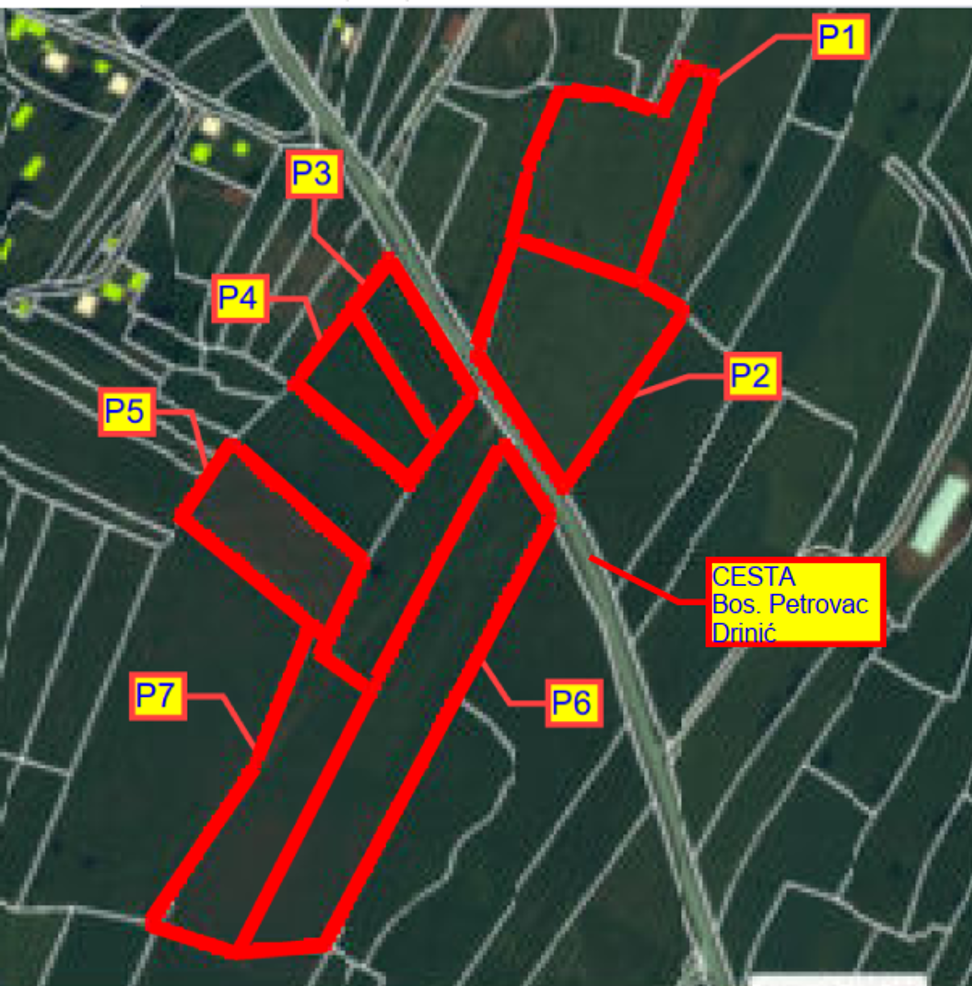

Sedam susjednih katastarskih parcela u katastarskoj općini Bara, ukupne površine 40.486 m², dostupno za koncesiju, zakup ili drugi oblik saradnje radi izgradnje solarnog parka. Lokacija ima direktan pristup javnoj cesti i planiranu tačku priključenja na distribucijsku elektroenergetsku mrežu.
| Oznaka | K.č. parcele | Naziv parcele | Površina (m²) |
|---|---|---|---|
| P1 | 230 | Kućerina | 6.685 |
| P2 | 231 | Ledinjak | 7.399 |
| P3 | 308 | Lučica | 4.027 |
| P4 | 310 | Lučica | 3.176 |
| P5 | 311 | Lučica | 2.361 |
| P6 | 313/1 | Bara | 10.877 |
| P7 | 313/2 | Bara | 5.961 |
| Ukupno | 40.486 m² | ||
Pogledajte lokaciju na Google mapi

Pristup je osiguran postojećom javnom cestom (Bosanski Petrovac–Drinić) koja zadovoljava tehničke uvjete za transport opreme i naknadno održavanje. Zemljani radovi za polaganje kabela i temelje konstrukcija su izvodivi bez posebnih ograničenja terena.
Potrebna je izgradnja vlastite transformatorske stanice, te kabelskog voda dužine oko 500 m do tačke priključenja na distribucijsku mrežu.
Vlasnik zemljišta je otvoren za razgovor o koncesiji, dugoročnom zakupu ili drugom modelu saradnje sa investitorima i koncesionarima u oblasti solarne energije. Dostupna je kompletna katastarska dokumentacija na uvid.